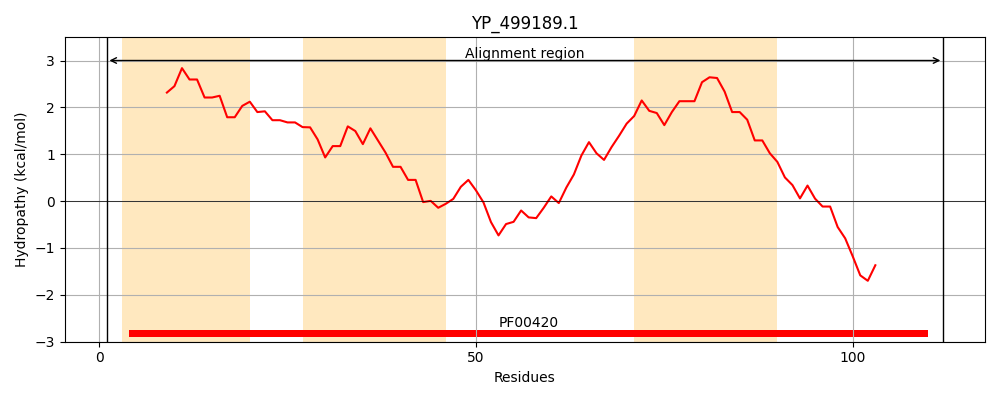
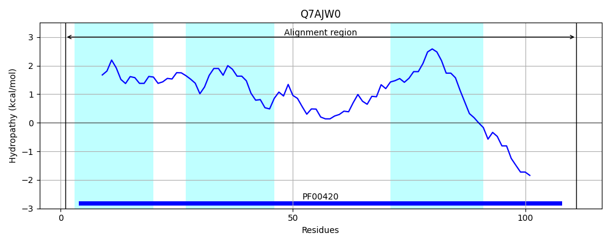
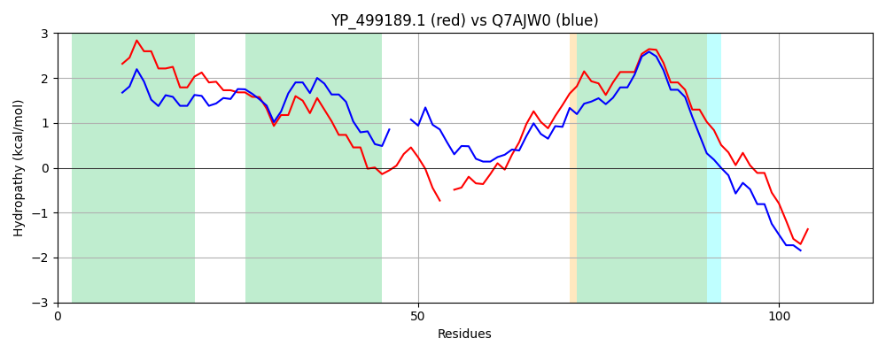

Hit Accession: Q7AJW0
Hit TCID: 2.A.63.1.2
Hit Description: gnl|BL_ORD_ID|15382 gnl|TC-DB|Q7AJW0|2.A.63.1.2 Na+/H+ antiporter OS=Bacillus halodurans GN=BH1317 PE=4 SV=1
Mach Len: 113
e:0.000000
Query TMS Count : 3
Hit TMS Count: 3
TMS-Overlap Score: 2.900000
Predicted Substrates:CHEBI:9175;sodium(1+), CHEBI:5584;hydron
BLAST Alignment:
| Protein Hydropathy Plots: | |
|---|---|
|  |  |
Pairwise Alignment-Hydropathy Plot: | |
|  | |